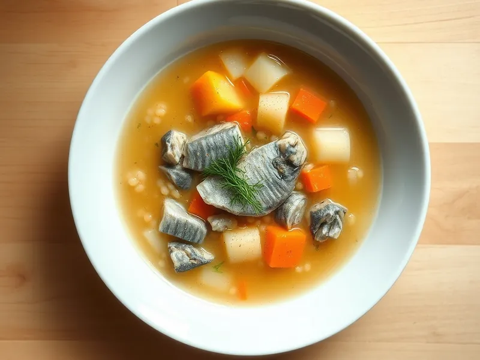

Рыбный суп из сардин с пшеном
Бюджетный рыбный суп из банки сардин с пшеном и картофелем
35 мин4 порц.247 ккал на порциюБ 18 · Ж 9 · У 24Русская кухня
Открыть в приложении: порции, таймеры, список покупок
Продукты на 4 порц.
- Сардины в масле1 шт
- Пшено3 ст. л.
- Картофель2 шт
- Морковь1 шт
- Лук репчатый1 шт
- Лавровый лист1 шт
- Соль1 ч. л.
- Укроп по желаниюпо вкусу
- Вода1500 мл
Как готовить
- Промойте пшено несколько раз горячей водой, пока вода не станет прозрачной, чтобы ушла горечь.
- Вскипятите воду на сильном огне, положите пшено, мелко нарезанный лук и тёртую морковь. Варите на среднем огне 10 минут.
- Добавьте картофель кубиками и варите 10 минут, пока он не станет мягким.
- Разомните сардины вилкой прямо в банке, удалите крупные кости и выложите в суп вместе с маслом из банки.
- Посолите, положите лавровый лист и варите на слабом огне 5 минут. Посыпьте укропом и дайте постоять 5 минут.
Совет. Солите в самом конце: консервы уже солёные, и суп легко пересолить.